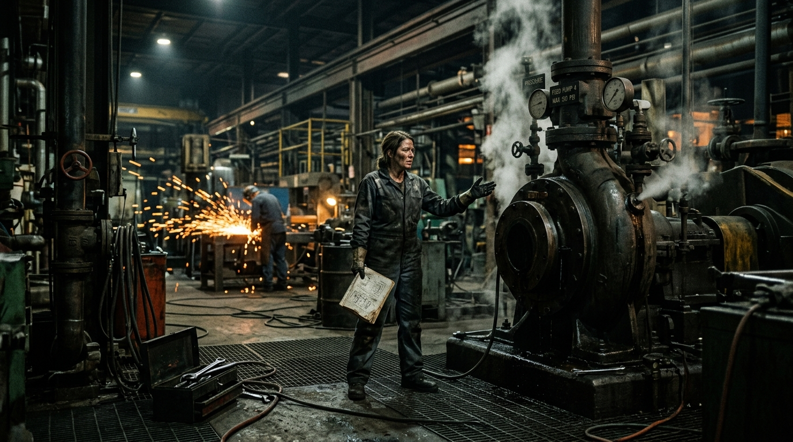
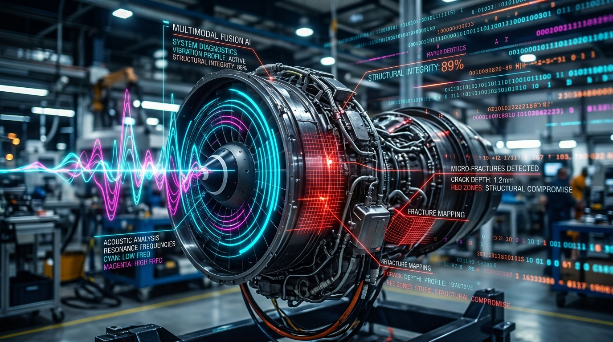
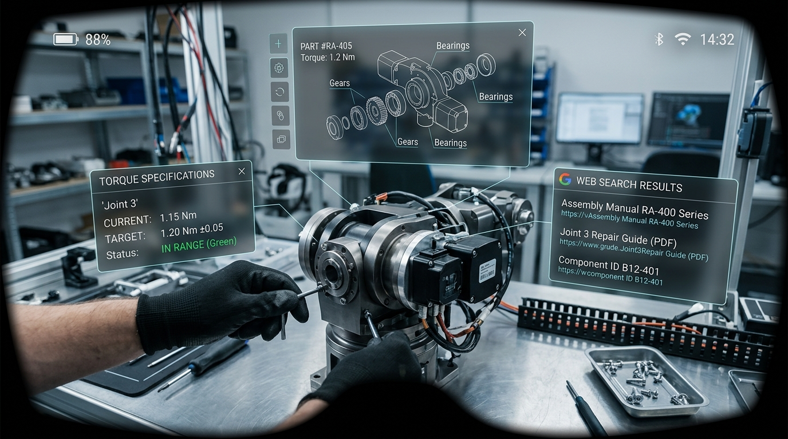
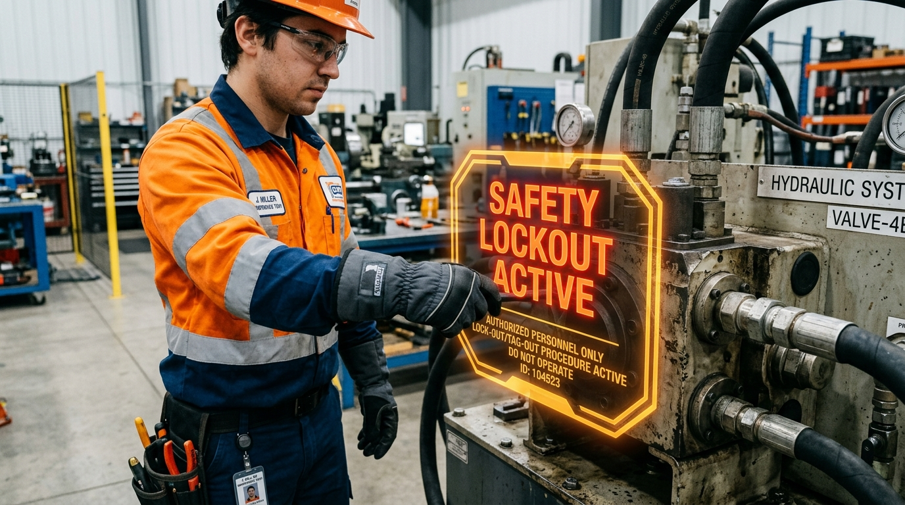
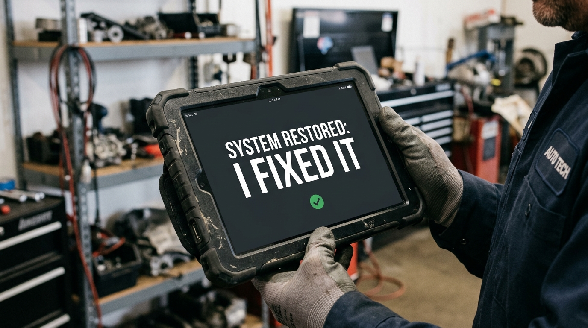

The Digital Foreman: The End of Mechanical Guesswork
Every minute a machine sits dead, money burns. Production lines bleed. Frustration mounts.
For a century, mechanical diagnostics has been a dark art relying on intuition. A mechanic listens to a pump, eyeballs a vibrating belt, and flips through grease-stained manuals, hoping to guess the root cause before the whole system tears itself apart.
Guesswork is the enemy. It is slow, expensive, and dangerous.
We are eradicating it. We built the world’s first unified Multimodal AI Diagnostic Pipeline—not just to identify symptoms, but to engineer absolute certainty. We don't build software; we build a Digital Foreman.


Hearing the Invisible, Seeing the Imperceptible
A human ear might miss a 2kHz frequency spike. To our Multimodal Fusion Engine, that spike isn't just noise—it is the dying scream of a secondary drive motor bearing.
By synchronizing acoustic signatures with visual micro-fractures in real-time, we bridge the gap between human limitation and machine-level precision.
Whether it’s a volatile burst of audio or a massive video payload of a failing hydraulic press, our ingestion layer captures every frame and frequency, checking it against a 48-million-node failure database in milliseconds.
The End of the Greasy Manual
Static knowledge bases are dead. Service bulletins change daily; model years evolve faster than technicians can track.
Our Just-In-Time (JIT) Knowledge Pipeline brings the exact intelligence you need, the exact second you need it. The moment our AI identifies the machinery, our Document Crawler silently scours the global web—from iFixit to NHTSA.
It strips away the noise, extracts the critical torque specs and tool requirements, and maps them into a high-dimensional vector space. You don’t search for the manual. The manual finds you.


Safety is Not a Feature. It is a Mandate.
We don't just diagnose; we protect. When our engine identifies a failure, it immediately generates a synthesized, step-by-step repair guide tailored to the technician's exact skill level.
If the system detects a high-pressure hydraulic failure, our Mandatory Safety Protocol automatically triggers hard stops for Lockout/Tagout (LOTO).
We don't just tell you what's broken; we make sure you stay alive while fixing it.
From Diagnosis to Doorstep
A perfect diagnosis is useless if you don't have the parts. While the technician reads the repair guide, our Automated Sourcing engine acts as a procurement army.
It silently geolocates the user and queries live retail nodes—AutoZone, RockAuto, RepairClinic—in parallel. Within seconds, it maps the OEM numbers, confirms inventory, and locates the exact replacement part required, ready for pickup.
Built Like a Foreman
We engineered the interface with a "Technical Editorial" philosophy. It is built for high-glare environments and greasy hands. No clutter. No visual noise. Just authoritative typography, calm tonal architecture, and snapping, mechanical micro-interactions. It looks, feels, and acts like the smartest foreman you’ve ever met.
Raw, ambiguous sensor data goes in. Certainty comes out. No more guessing. No more downtime.
Just three definitive words:
"I fixed it."
